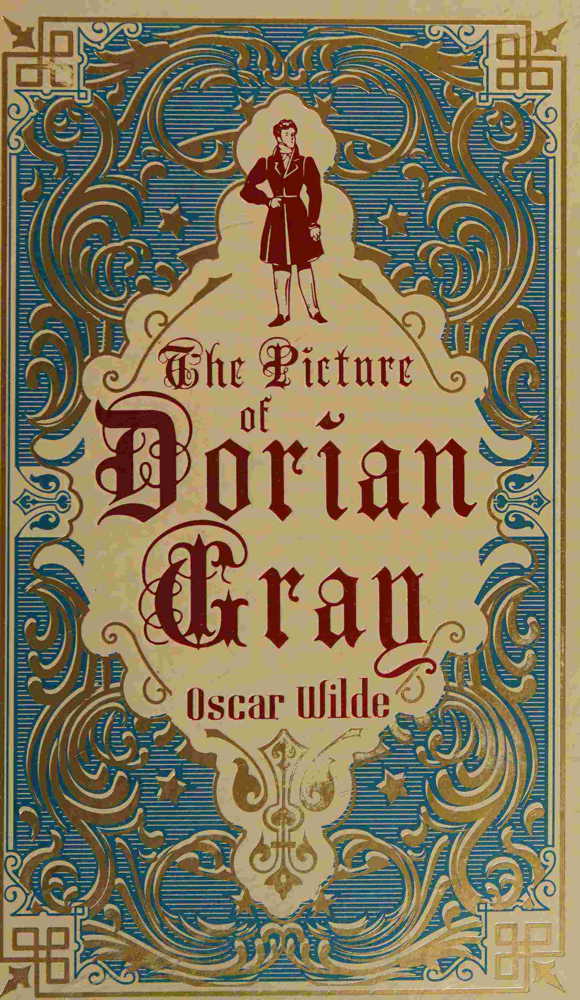

The Picture of Dorian Gray
صورة دوريان غراي
الأدب
ملك عام
ترجمة كاملة
رواية وايلد الوحيدة: دوريان غراي يتمنى أن تحمل صورته الخطايا ويبقى هو شاباً أبداً، فيصبح الفن مرآةً للضمير. نثر أنيق ومفارقات لامعة عن الجمال والفن وثمن المتعة، أرعبت إنجلترا الفكتورية وما تزال تُقرأ بأعراب كامل: «الرجل الذي يقتل عقله يصبح مجرد عبد لأحاسيسه».
| المؤلف | أوسكار وايلد — Oscar Wilde |
| سنة النص الأصلي | ١٨٩٠ |
| كلمات المصدر (الإنجليزية) | ٧٨٩٨٥ |
| كلمات الترجمة (العربية) | ٦١٦٠٦ |
| مقاطع الترجمة المدققة | ٤٣ |
| مدة القراءة التقريبية | ≈ ١٤٠٠ دقيقة |
الترخيص والحقوق: النص الأصلي (١٨٩٠/١٨٩١) في الملك العام (توفي وايلد ١٩٠٠). هذه الترجمة العربية منشورة بإذن حر. المصدر: gutenberg.org/ebooks/174